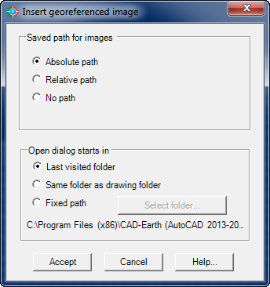

|
|
Toolbar:
Menu: CAD-Earth > Insert georeferenced image
|
|
|
Command line: CE_INSGEOIMG
CAD-Earth version: Basic, Plus, Premium. |
.png)
.png)
Command description:
Use this command to insert images having the corresponding world file with spatial data information. The world file is a text file with numerical values to transform an image and place it in the correct coordinates. The world file must be located in the same folder as the image file and must have the same name and a file extension equal to the first and last letters of the image file extension and the letter 'W' appended to the end. For example, if the image file name is C:\IMAGES\IMAGE01.TIFF the corresponding world file name must be C:\IMAGES\IMAGE01.TFW. Image world files can be created by various GIS applications (like ArcGIS). CAD-Earth has the option to create world files when importing images from Google Earth.
Dialog box settings :

Dialog box to insert georeferenced images
ØSaved path for images.
•Absolute path. The source image file must be located in the path selected.
•Relative path. The source image file must be located relative to current drawing file folder. For example, if the current drawing file is located in C:\DRAWINGS\DRAWING01.DWG and the selected image file is located in C:\IMAGES\IMAGE01.TIFF the relative path notation will be ..\IMAGES\IMAGE01.TIFF. (The source image file must be located in a folder one level up relative to the current drawing file folder in a subfolder named IMAGES).
•No path. The source image file must be located in the same folder as the current drawing folder.
ØOpen dialog starts in.
•Last visited folder. The open file dialog box to select the image files will open in the previous selected folder.
•Same folder as drawing folder. The open file dialog box to select the image files will open in the current drawing file folder
•Fixed path. The open file dialog box to select the image files will always open in a folder selected by the user.
•Select folder button. When selecting this button a folder browser will open to select the folder where the open file dialog box will start in.
Tips:
•If you intend to share your drawing containing georeferenced images you must copy the image file to the corresponding path to avoid getting empty image frames in the drawing.
•If you select to save your image with an absolute path the image file must be copied to the same exact path in every computer where the drawing containing the image will be opened.
•If you select to save the image with no path, the corresponding images must be located in the same folder as the drawing file in every computer.
•If you select to save the image with a relative path, the image files must be located in the same folder level relative to the drawing file folder in every computer.
•You can select multiple image files to insert in the open file dialog box pressing the Ctrl and Ctrl+Shift keyboard keys.
Related topics:
•Import image from Google Earth
Copyright © 2023 Arqcom Software
Google Earth© is a registered trademark of Google inc. All other trademarks are the property of their respective owners.